Instagram has changed the way people interact. It’s made stars out of everyday people, propped up an entire
influencer market, and can even be used to detect when someone became clinically depressed.
Now it’s changing the way people think about cocktails.
A host of influencers in the alcohol space have launched Instagram feeds devoted solely to cocktails.
Established accounts like Beautiful Booze, Gastronomista, and Apartment Bartender have tens or even
hundreds of thousands of followers. Some are paid to create recipes, or sent on trips around the world
sponsored by liquor brands. Others are given free samples to feature in cocktail posts or Instagram stories.
The vast majority of “drinkstagrammers,” or home cocktail enthusiasts who regularly post their creations on Instagram,
just do it out of love for cocktail culture. Serious cocktailing used to be limited to a hyper-niche community
of professional mixologists in cult bars or speakeasies. Drinkstagrammers are reinvigorating the craft and its
community, bringing geographic diversity and homegrown enthusiasm, and posting thousands of cocktail images
every day. Many live in places that don’t have upscale cocktail bars, and they reach audiences who might not
have the time, money, or inclination to go to leading cocktail bars.
One of the ways the Instagram community is taking the mystery from behind the bar
is by making cocktails more accessible, according to Jordan Hughes, a former
preacher who runs the cocktail account High-Proof Preacher. He recently decided to move
into creating content for liquor companies and others full time.
“Most people think of making cocktails as a ‘fancy thing,’ but it’s really just a hospitality thing,”
Hughes says. He has no professional bartending experience, but his Instagram account has
given him access to an entirely new side of the beverage world.
“It’s interesting how much I’ve been able to interact with people in the industry,”
Hughes says. “For cocktail Instagrammers like myself, who have other jobs, making drinks is
more of a passion project.”
Hughes’s thoughts are echoed by other cocktail influencers. Jason Plummer, the man behind Barrel Aged Dad,
started his account with the goal of making craft cocktails more approachable. As Plummer’s experience
grew, so did his perception of what could be considered an approachable cocktail.
“It’s definitely evolved from the standard Old Fashioned,” Plummer says. “That’s how it goes, though.
The craft cocktail world sucks you in deeper and deeper until the next thing you know your wife hates
you because you’ve taken a third of her pantry space with liquor bottles and your fridge has five different
bottles of homemade simple syrup in it.”
Both Hughes and Plummer credit Elliott Clark, who runs the account Apartment Bartender, for inspiring them and leading the way.
Clark worked as a creative content producer when he took a Cocktail 101 class with some friends and started experimenting with drinks.
In October 2015, he posted his first cocktail on Instagram. Today, he has a website, blog, and 37,000 followers.
Others started from the bar and went to Instagram, like Will and Kaitlyn, the couple behind Kale + Cocktail.
Will has worked as a professional bartender in the Charleston, South Carolina area since 2014. He met Kaitlyn, a designer,
when he was working behind the bar. The couple combined Will’s bar experience with Kaitlyn’s photography and design expertise
to start their drinks-centric Instagram account, Kale + Cocktail, in September 2017.
“I think Instagram is making craft cocktails seem much more approachable to home bartenders or cocktail enthusiasts,” Will says.
“The menus at cocktail bars these days seem to be very intentionally cryptic, and before I started working in food and beverage
I was afraid to order off the cocktail menu. Instagram has ‘lifted the shroud’ in a sense that may have been preventing less-experienced
drinkers from trying new things.”
This is what makes the drinkstagram movement so intriguing. From ordering obscure ingredients off Amazon, to watching DIY videos
on YouTube, digital access is democratizing aspects of food and beverage. People are able to participate in trends once only available
in fine-dining establishments or certain cities. Once they have mastered (and, naturally, shared) a new recipe, other people build
upon that recipe and collectively propel trends forward.
A man named Mike Yoshioka, who runs the account mmydrinks, is an Instagram cocktail enthusiast pushing the limits of home
bartending and, in many ways, creating and developing national drinks trends. He runs photo campaigns with some of the top
cocktail creators that encourage people to explore classic drinks and ingredients. In 2017, Yoshioka launched #WeHaveTheLastWord,
where people were asked to create variations on the Last Word cocktail. He also helped organize #CocktailRedux with Steve
from @boxesandbooze, where people were asked to take a classic cocktail and upgrade it. The largest campaign Yoshioka has run is
#AmaroWeek in the summer of 2017, in which he asked people for their favorite takes on amaro for a full week of amaro-based cocktail
photos. #AmaroWeek had more than 2,500 submissions, many of which included original cocktails.
During Amaro Week, it was hard for anyone even vaguely associated with the drinkstagram community to open Instagram without feeling
its influence. Scrolling through image after image of cocktails that look straight out of magazines can be addicting, and the urge to
try all the recipes shared by people can get expensive. It gave people outside big cocktail cities like New York or San Francisco the
chance to see how to make cocktails like an amaro-based Julep or countless iterations of the Negroni.
Cocktail influencers offer small craft distillers a unique opportunity — and vice versa. Big liquor brands hire public relations
companies, advertising firms, and distribution networks to put their products in front of media companies and bar owners.
(VinePair receives bottles from established liquor producers every day. For this we are exceedingly grateful.) It can be difficult
for smaller craft and upstart distillers to generate mainstream media exposure on limited budgets. Sending samples directly to
influencers can be an easier, more cost-effective way for smaller labels to spread brand awareness.
Meanwhile, Instagramming cocktail enthusiasts have a need for spirits. Creating drinks from scratch is expensive; each
three-ingredient bottle means the person making the drink has to buy the bottles and spend time photographing each cocktail.
“Being a one-income family, I wear the ‘Dad’ hat first and I’m budget minded,” Plummer says. “I’ve got diapers to buy,
so I can’t be dropping $75 on a bottle of Chartreuse every month.” Plummer doesn’t post about a product if he doesn’t like it,
but he’s always eager to try new things without having to spend a lot of money.
“It’s supporting the people behind the spirit or product,” he adds. “I’ve been a small business owner and I’m a huge advocate for
entrepreneurs that lay it all on the line to do what they love, so if I can support that via some exposure, it’s a win-win.”
The same is true for Hughes. He used to reach out to brands to offer a trade for content, but he says he stopped when making
and photographing cocktails started to feel like work. He’s now more selective with the people he collaborates with, emphasizing
authenticity in his account rather than working with every brand that reaches out to him.
All it takes is a look at the 60-plus bourbon distilleries across America to know that distilling culture is growing.
There are more than 1,300 active craft spirits producers in the U.S., and publications like Fortune have declared that craft
spirits are the next big thing in alcohol. These independent companies can look to the craft beer movement before them to see that
social media is a huge part of transforming from a local pit stop to a full-blown sensation.
That’s part of the reason that the next big craft cocktail movement will happen on Instagram, not in cocktail bars.
Producers will continue to send innovative products, while scrappy drinkstagrammers will use what they have to make new drinks.
The top influencers will continue to build out content, brands will share that content, and more people will see the brands and drinks.
As spirits gain market share on wine and beer, drinkstagrammers are doing their part to develop and diversify cocktail culture.
Instagram won’t be your next favorite bar in the future, but it could be where you find your next favorite drink.
Drinkstagrammers to follow
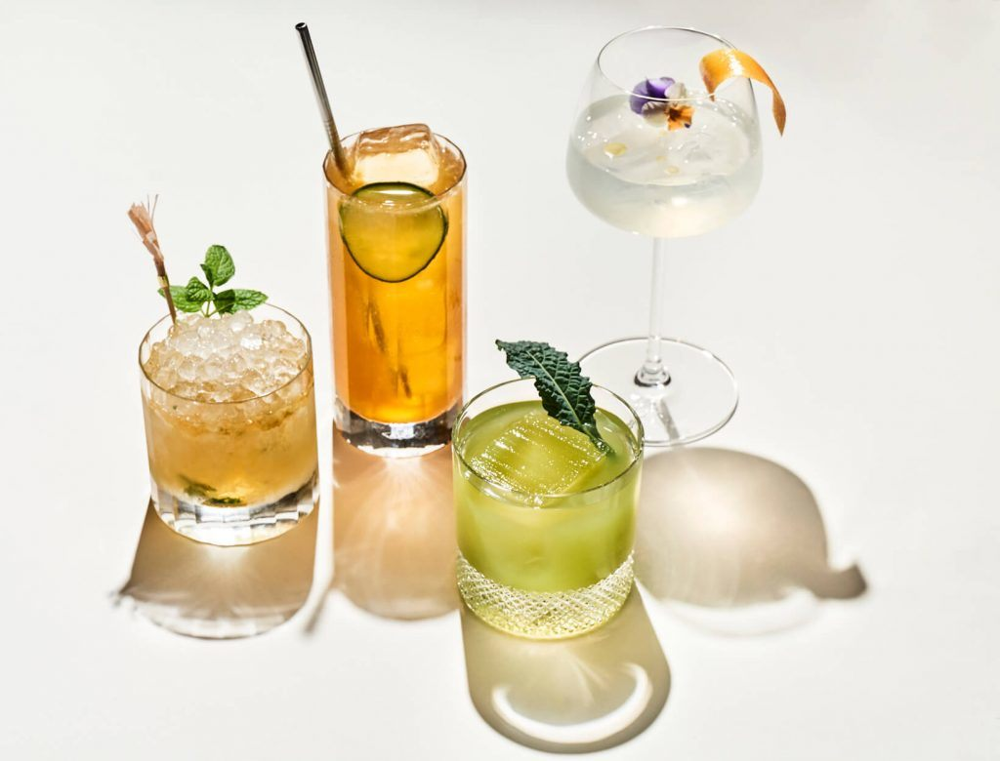
A guide to Cdb spiked cocktails
Read more
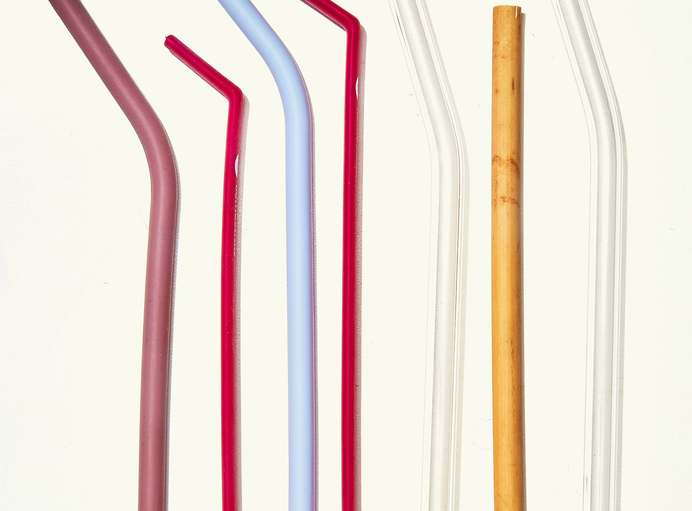
The best reusable straws for your cocktail, coffee and more
Read more
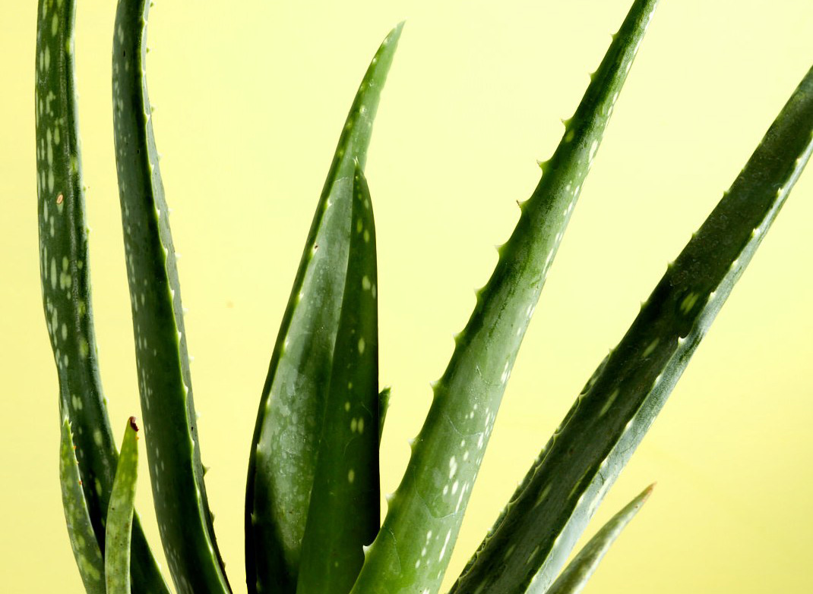
The plant-based mixer we`re adding to all our cocktails
Read more
 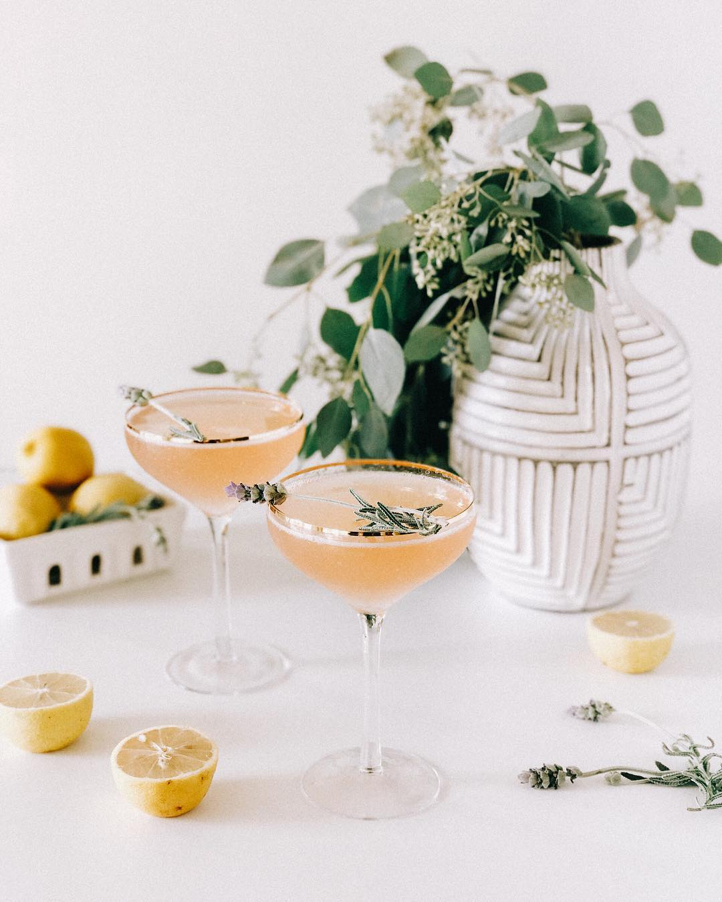
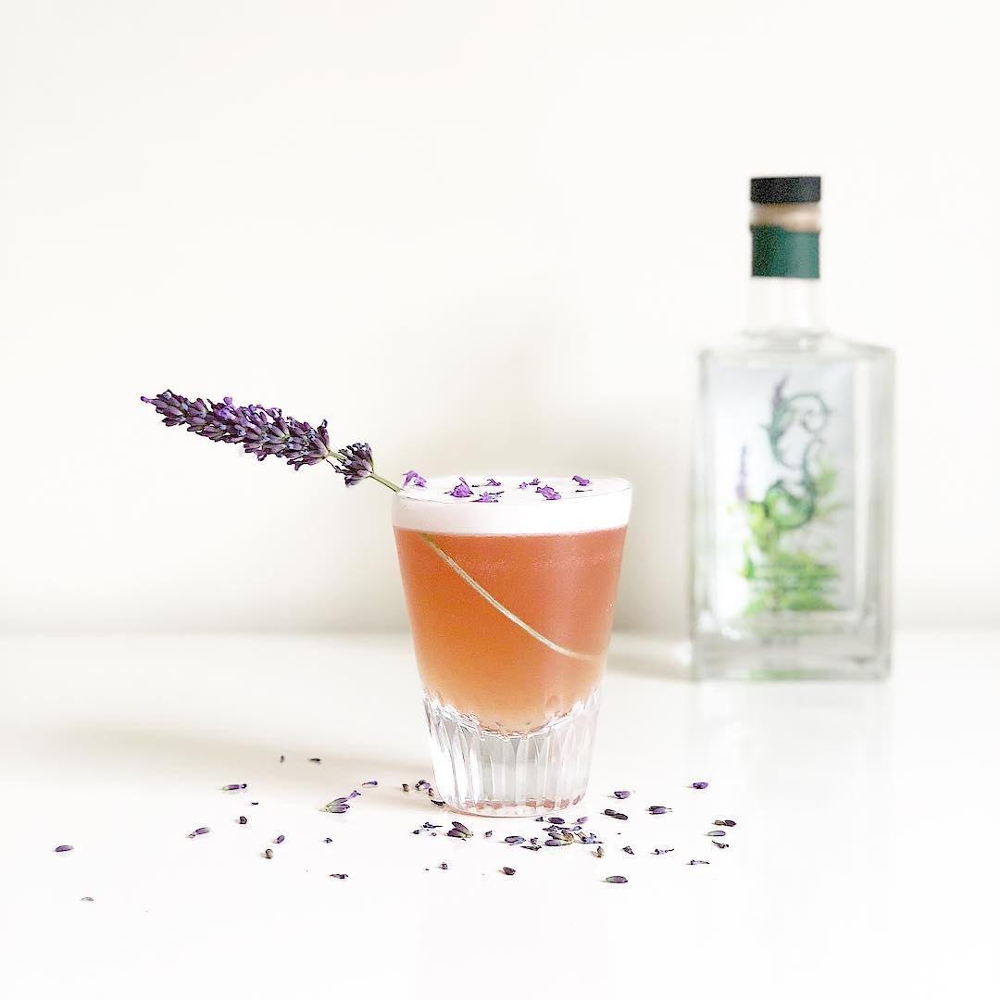
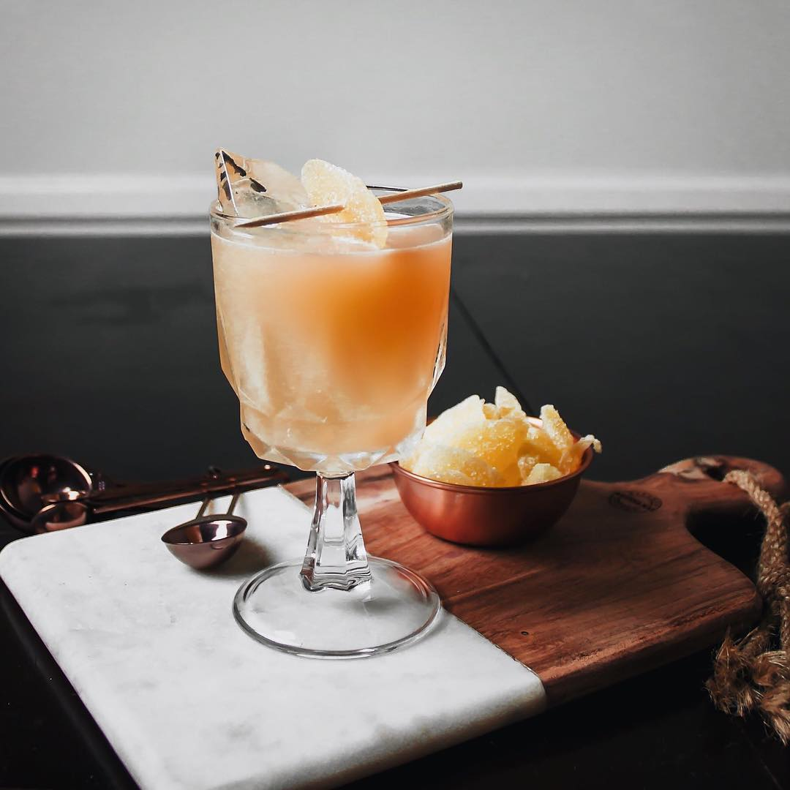
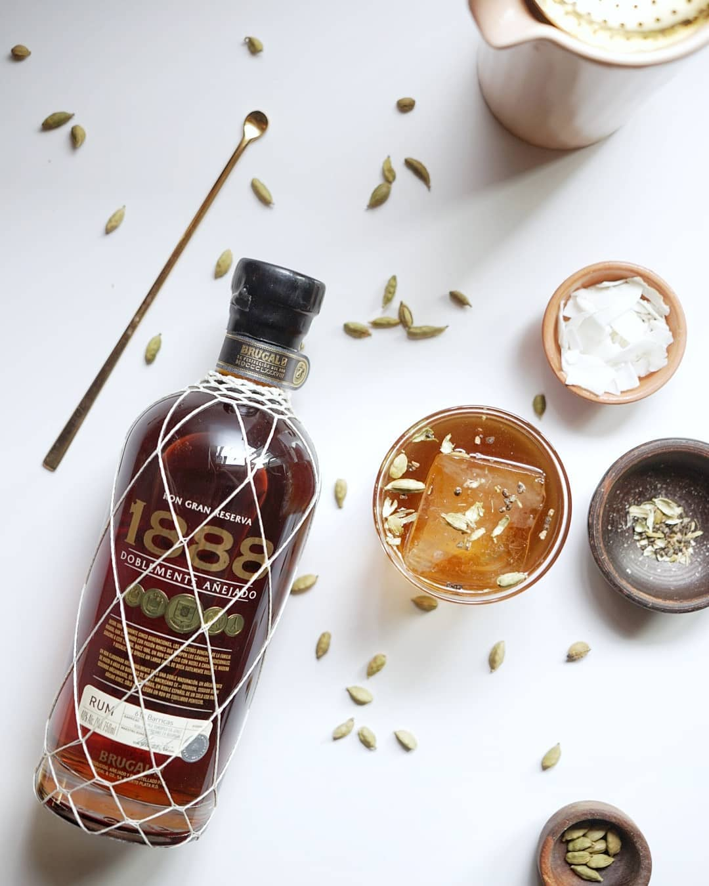
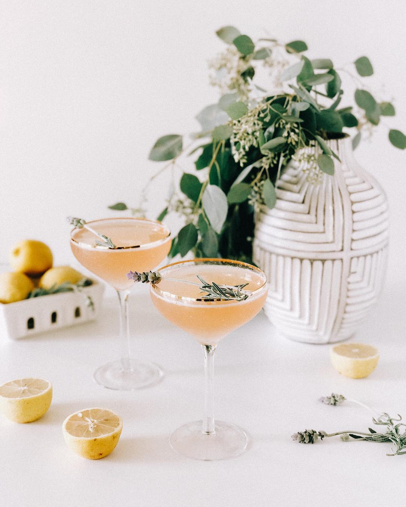
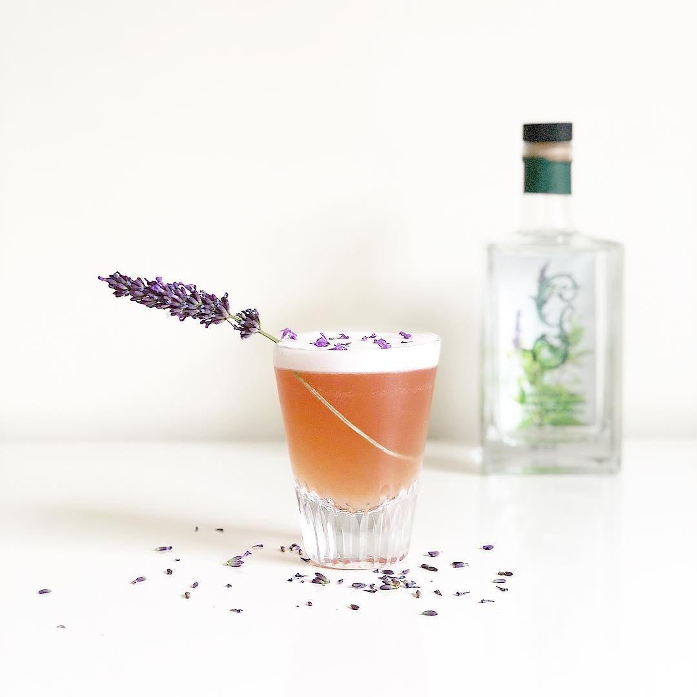
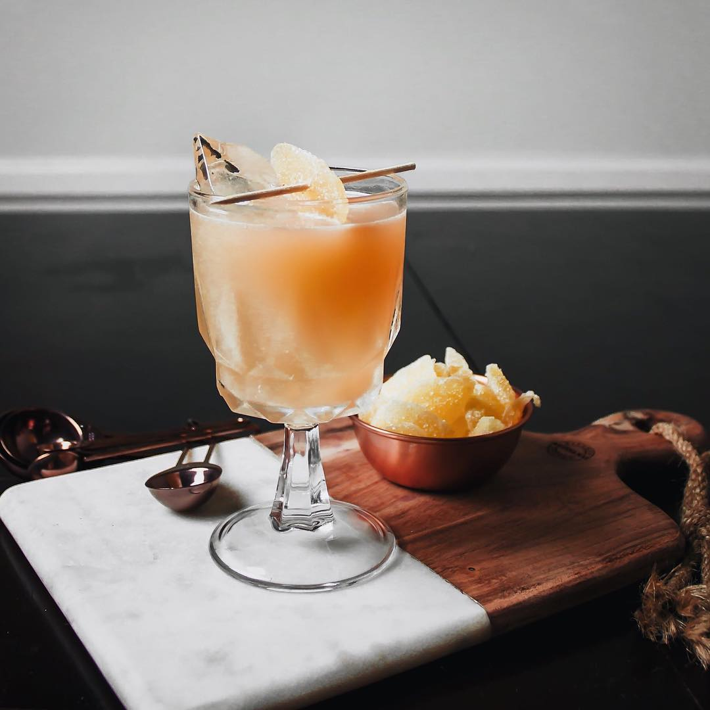
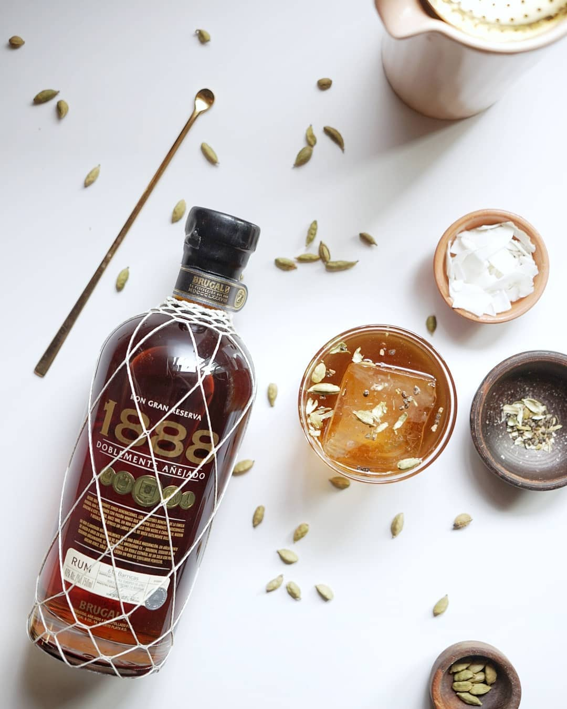